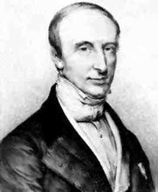

| Choisissez votre langue ! | Choose your language ! |
Séries produit
Product series
Multiplication des séries
Nous commençons par l'énoncé principal :Multiplication of series
We start with the main statement:théorème 1
Soient (s,u) et (t,v) deux séries simples, supposées toutes les deux absolument convergentes. Alors la série double (z,w) de terme général wm,n=umvn est, elle aussi, absolument convergente et de somme ST si S est la somme de (s,u) et T la somme de (t,v).
theorem 1
Let (s,u) and (t,v) be two simple series, both assumed absolutely convergent. Then the double series (z,w) with general term wm,n=umvn is also absolutely convergent and of sum ST if S is the sum of (s,u) and T the sum of (t,v).
Cela résulte immédiatement des résultats de la consacrée aux séries doubles. En effet la série de terme général |wm,n| a toutes ses sommes partielles majorées par le produit στ, σ étant la somme de la série de terme général |um,n| et τ étant la somme de la série de terme général |vm,n|. Il suffit donc d'appliquer le théorème de Fubini à (z,w) qui sera donc de somme ST.
This follows immediately from the results of the devoted to double series. Indeed the series of general term |wm,n| has all its partial sums bounded by the product στ, σ being the sum of the series of general term |um,n| and τ being the sum of the series of general term |vm,n|. It is therefore sufficient to apply Fubini's theorem to (z,w) which will therefore have sum ST.
définition 1
Considérons maintenant la série simple (p,k) où k est défini par: k0=u0v0=w0,0
k1=u0v1+u1v0=w0,1+w1,0
k2=u0v2+u1v1+u2v0=w2,0+w1,1+w0,2
\( \displaystyle k_{n}=\sum_{i+j=n}^{}u_{i}v_{j} \)
La série simple (p,k) s'appelle le 'produit de Cauchy' ou encore 'produit de convolution' de (s,u) par (t,v).definition 1
Now consider the simple series (p,k) where k is defined by: k0=u0v0=w0,0
k1=u0v1+u1v0=w0,1+w1,0
k2=u0v2+u1v1+u2v0=w2,0+w1,1+w0,2
\( \displaystyle k_{n}=\sum_{i+j=n}^{}u_{i}v_{j} \)
The simple series (p,k) is called the 'Cauchy product' or also 'convolution product' of (s,u) by (t,v). Conservant les notations précédentes, nous allons maintenant examiner le lien entre la série simple (p,k) et la série double (z,w).
Notons que chaque terme k de p correspond à la somme des termes d'une 'diagonale' de la série double z, pn correspondant lui-même à la somme des termes d'un 'triangle' .
Ci-dessous on voit:
Notons que chaque terme k de p correspond à la somme des termes d'une 'diagonale' de la série double z, pn correspondant lui-même à la somme des termes d'un 'triangle' .
Ci-dessous on voit:
- en vert les termes intervenant dans le calcul de k0
- en rouge les termes intervenant dans l'expression de k1
- en bleu ceux intervenant dans le calcul de k2
- en fond colorié tous les éléments entrant dans la somme p2
Keeping the previous notations, we will now examine the link between the simple series (p,k) and the double series (z,w).
Note that each term k of p corresponds to the sum of the terms of a 'diagonal' of the double series z, pn corresponding to it -even to the sum of the terms of a 'triangle' .
Below we see:
Note that each term k of p corresponds to the sum of the terms of a 'diagonal' of the double series z, pn corresponding to it -even to the sum of the terms of a 'triangle' .
Below we see:
- in green the terms involved in the calculation of k0
- in red the terms involved in the expression of k1
- in blue those involved in the calculation of k2
- in colored background all the elements entering the sum p2
| w0,0 | w0,1 | w0,2 | ... | w0,n | ... |
| w1,0 | w1,1 | w1,2 | ... | w1,n | ... |
| w2,0 | w2,1 | w2,2 | ... | w2,n | ... |
| . | . | . | . | . | ... |
| . | . | . | . | . | ... |
| . | . | . | . | . | ... |
| wm,0 | wm,1 | wm,2 | ... | wm,n | ... |
| . | . | . | . | . | ... |
Le résultat important (théorème de Cauchy) est le suivant:
The important result (Cauchy's theorem) is:

théorème 2
Si (s,u) et (t,v) sont absolument convergentes, la série produit (p,k) est aussi absolument convergente et sa somme P est égale à ST.
theorem 2
If (s,u) and (t,v) are absolutely convergent, the product series (p,k) is also absolutely convergent and its sum P is equal to ST.
démonstration
Soit n un entier. Posons m=E(n/2) E désignant ici la partie entière. Si zm,m désigne la somme partielle de la série double (z,w). Estimons la différence entre pn=k0+k1+ ... +kn et zm,m On sait d'après le critère de Stolz appliqué à la série double de terme général |uivj| que cette différence est aussi petite qu'on veut pourvu que m soit suffisamment grand.Mais quand n tend vers l'infini, m tend également vers l'infini.
Or on sait que zm,m tend vers ST. Il en va donc de même de pn.
proof
Let n be an integer. Let m=E(n/2) E designating here the integer part. If zm,m designates the partial sum of the double series (z,w). Estimate the difference between pn=k0+k1+ ... +kn and zm, m We know from the Stolz criterion applied to the double series of general term |uivj| that this difference is as small as we want provided m is large enough.But when n tends to infinity, m also tends to infinity.
We know that zm,m tends to ST. The same is therefore true of pn.
Un exemple d'application
Voici un cas intéressant d'application des résultats du paragraphe ci-dessus.Si x désigne un réel quelconque la série de terme général un=xn/n! est absolument convergente. Il suffit pour le voir d'utiliser le . Désignons par exp(x) la somme de cette série.
Soient maintenant (s,u) la série de terme général un=xn/n! et (t,v) la série de terme général vn=yn/n!.
le terme général kn de la série produit de (s,u) par (t,v) est donc:
\( \displaystyle k_{n}=\sum_{i=j=n}^{}\frac{x^{i}y^{j}}{i!j!} \)
Mais la formule du binôme nous donne:\( \displaystyle k_{n}=\frac{(x+y)^{n}}{n!} \)
De cela résulte la formule:exp(x+y)=exp(x)exp(y)
NB: Nous démontrerons par la suite que la fonction exp ainsi définie n'est rien d'autre que l'exponentielle de base e, x → ex, fonction réciproque du logarithme népérien, de sorte qu'on retrouve la formule ex+y=exey
Voici un programme python d'illustration:
Et son équivalent Julia 1.6 :
An example of application
Here is an interesting case of application of the results of the paragraph above.If x denotes any real the series of general term un=xn/n! is absolutely convergent. To see it, just use the . Let exp(x) denote the sum of this series.
Now let (s,u) be the series of general term un=xn/n! and (t,v) the general term series vn=yn/n!.
the general term kn of the product series of (s,u) by (t,v) is therefore:
\( \displaystyle k_{n}=\sum_{i=j=n}^{}\frac{x^{i}y^{j}}{i!j!} \)
But the binomial expansion gives us :\( \displaystyle k_{n}=\frac{(x+y)^{n}}{n!} \)
From this results the formula:exp(x+y)=exp(x)exp(y)
NB: We will demonstrate later that the function exp thus defined is nothing other than the base exponential e, x → ex, reciprocal function of the natural logarithm, so that we find the formula ex+y=exey
Here is an example python program:
And its Julia 1.6 equivalent :
|
Création Gilles Dubois - licence CC-BY-SA
Created by Gilles Dubois - licence CC-BY-SA
|
Septembre 2023
September 2023
|
Version mobile Jquery
Mobile Jquery version
|
|